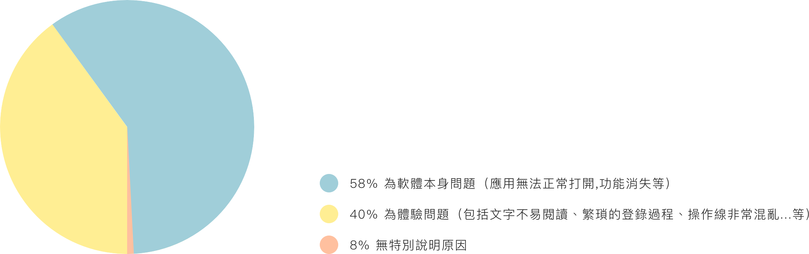
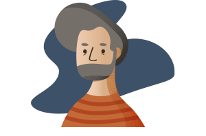
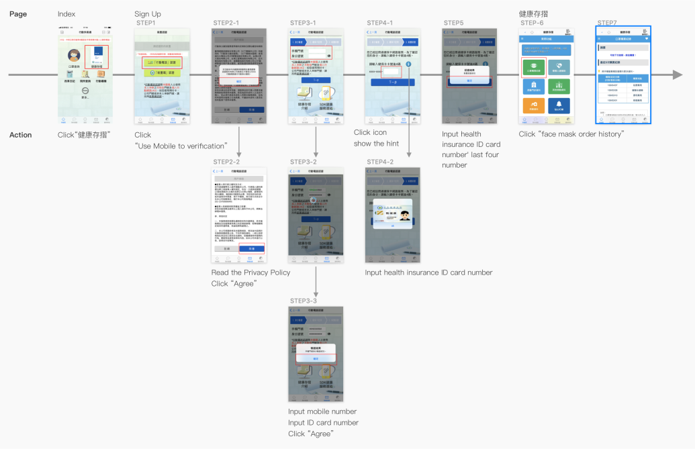
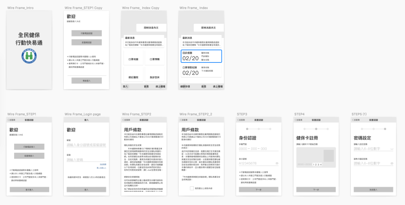
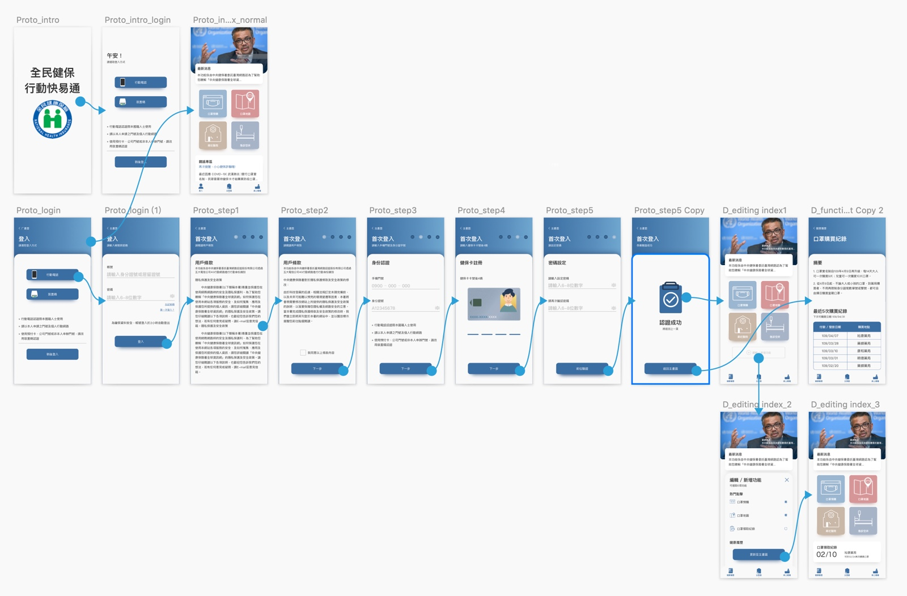
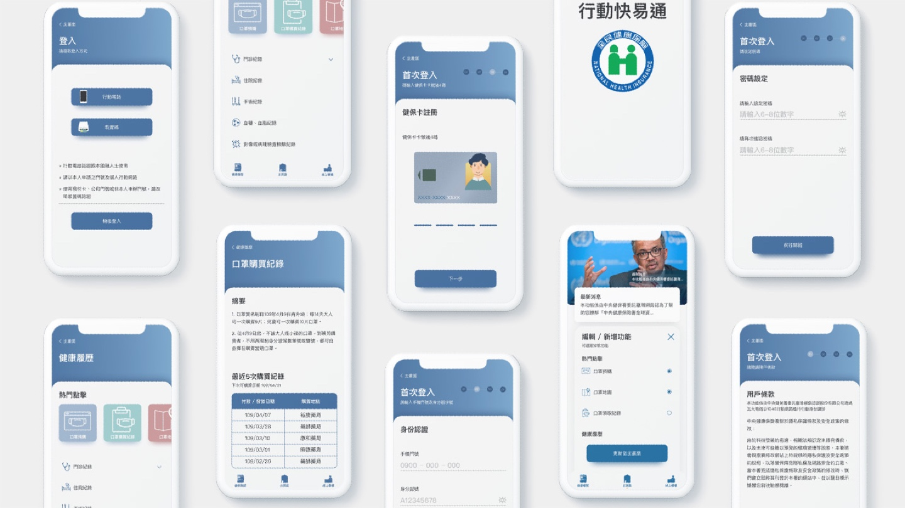

APP
2020
UI.UX Designer
Prototyping
行動健保快易通
2020年1月，世界遭受了新型冠狀病毒病 （COVID-19)的侵害，政府啟動了新的口罩配給系統，以確保口罩能公平地分配給所有民眾。民眾可以透過政府的公開數據知道每個藥房還剩下多少個口罩。有些熱情地民眾也自發性的開發出軟體以便市民搜索相關信息。但是，由台灣民眾對於政府開發的軟體已有既定印象，包含不合適的字體大小、花俏的介面、官腔的行話...等，導致民眾對於產品有著的不好的體驗經驗而不願意下載使用。在使用“健保快易通”APP後，我也發現幾個問題是大家對於這個APP如此反感的原因。同時，我參與了密西根大學(University of Michigan)的使用者體驗課程，這次將利用學到的知識製作此次的Case Study。
學習目標
- 優化登入流程
- 練習使用Jako Nielsen的10啟發式原理探討問題點
- 學習使用者訪談技巧
- UI元件設計練習
設計流程
在確定設計目標之前，有必要了解使用者對此APP的看法，因此我收集了三月份用戶在Google商店和iTunes上留下的評論。3月份中，此APP在iTunes上的得分為3.6 / 5，而Google的得分為4.6 / 5，不過我認為此評論並不完全代表該APP提供了良好的用戶體驗，因為在高評價的狀態下，多數人仍在評論區發表他們對APP的不滿同時對於台灣的防疫工作留下肯定的評價。
Step01. 概況分析
在確定設計目標之前，有必要了解使用者對此APP的看法，因此我收集了三月份用戶在Google商店和iTunes上留下的評論。3月份中，此APP在iTunes上的得分為3.6 / 5，而Google的得分為4.6 / 5，不過我認為此評論並不完全代表該APP提供了良好的用戶體驗，因為在高評價的狀態下，多數人仍在評論區發表他們對APP的不滿同時對於台灣的防疫工作留下肯定的評價。

Step02. 易用性評估
因為不了解實際的使用族群，我觀察了健保局的社群帳號，將潛在使用者群分為三種不同年紀，並找了年紀相仿的受試者進行APP的操作觀察。為了讓受試者更進入執行任務的狀態，我先設計了任務的背景故事，以口頭述說的方式協助受試者進入故事環節並觀察他們如何完成任務。
Scenario Background
為了確保每個民眾都能有足夠的口罩使用，政府建立了口罩分配系統，讓民眾能在藥房進行購買，前幾天你路過藥房並買了口罩，卻不記得購買日期，您不想冒著群聚感染的風險到藥局詢問，這時政府宣布在健保快易通APP新增了口罩的相關功能，所以您決定嘗試搜尋自己的口罩購買紀錄。
User Task
請下載健保快易通APP，完成登入程序後搜尋自己的口罩購買紀錄。
Persona
王OO
- 年齡：
- 性別：
- 職業：
- 說明：
- 26
- 女
- 網頁設計師
- 總是工作忙，經常在手機上玩遊戲。
林OO
- 年齡：
- 性別：
- 職業：
- 說明：
- 54
- 女
- 會計師
- 不熟悉使用手機，但有時使用社交與朋友聊天的媒體。

宋OO
- 年齡：
- 性別：
- 職業：
- 說明：
- 60
- 男
- 電子工程師
- 不喜歡在手機上處理複雜的事情，但熟悉手機操作。
Research & User Journal
製作User Journal以觀察受試者是否可以有效地完成任務。 同時，邀請受試者在操作時使用放聲思考方法，以了解他們在動作時產生的想法。

Step03. 分析問題
在此案例研究中，其中一位受試者在進行登入步驟的第三步“輸入健保卡卡號”時必須透過我的提示才完成任務，也就是說有可能此步驟會導致其他使用者無法登入此APP，並無法使用APP大部分的功能。我通過Jako Nielsen的10啟發式原理來分析這些問題，並將問題的種類依據 有效性問題 > 效率性問題 > 滿意度問題 進行排序。以優先順序決定出最需要被解決的問題，這些問題是受試者在操作流程中，最容易感到挫折、沮喪的項目。

Step04. 設定改善目標
在健保快易通APP中，使用者必須透過健保卡ID進行登入才可以操作大部分的功能，在觀察過程中，登入過程對於受試者來說非常繁瑣並且沒有提供適當的回饋，導致受試者無法成功完成任務，因此，在以下的流程與重新設計過程中將以健保卡綁定與登入過程為主進行優化。
Step05. Wireframe
以Wireframe的方式確認每個頁面上的功能是否完備，並適時提供適當的回饋、狀態。

Step06. Prototype

Step07. Redesign

Step08. 結果分析
本次的案例研究的結果顯示，未經改進的版本的平均的操作時間為14分鐘。 相比之下，優化版本僅需在5分鐘內完成，因此能有效提高使用者完成查詢口罩購買記錄的任務。 而且，每個參與者都無需透過研究者提示即可完成任務。 然而，我無法取得的真實用戶數據，只能通過健康保險部官方網站或社交媒體和APP商店上的用戶推薦來概略了解用戶的想法和需求。